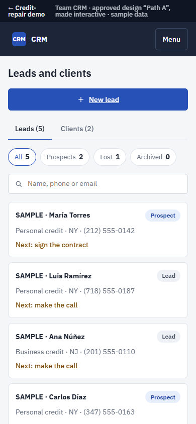
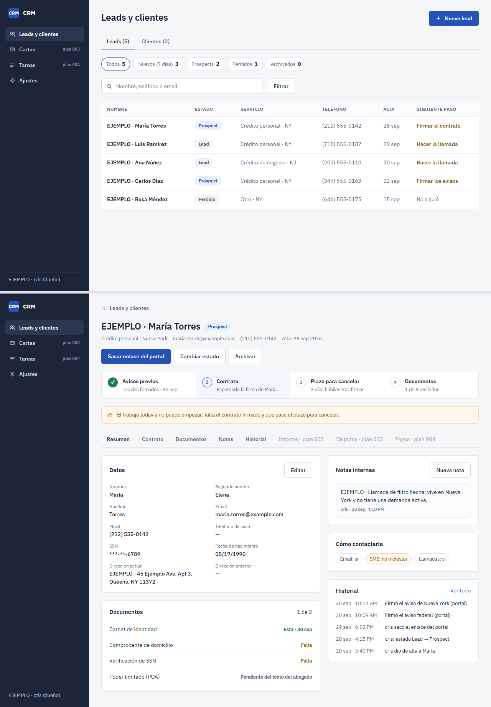
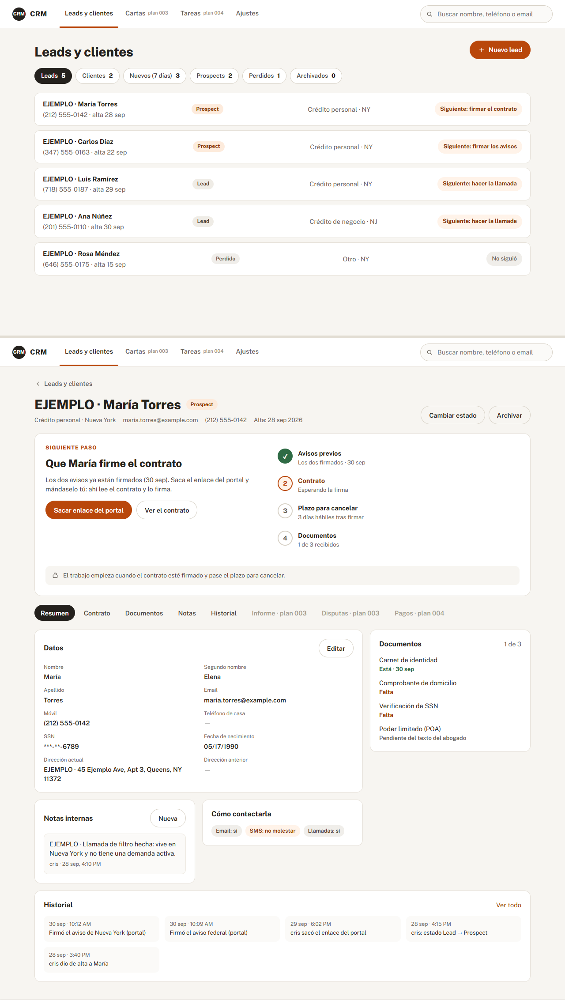
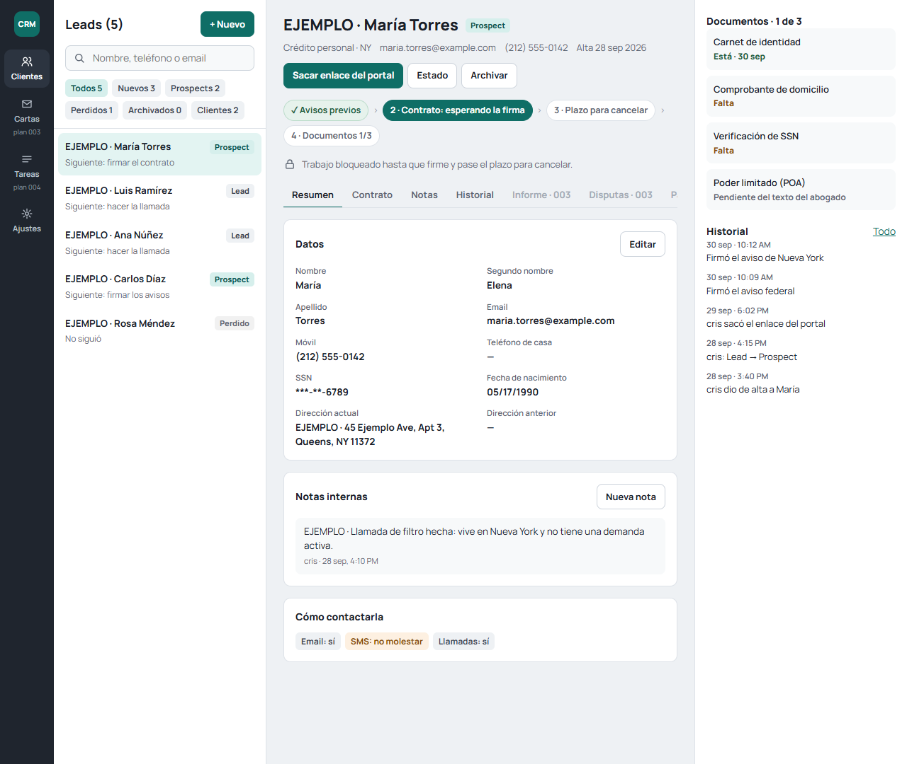
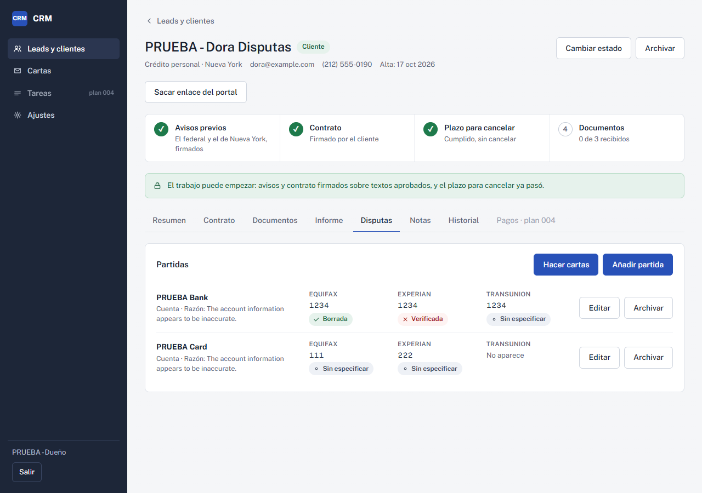
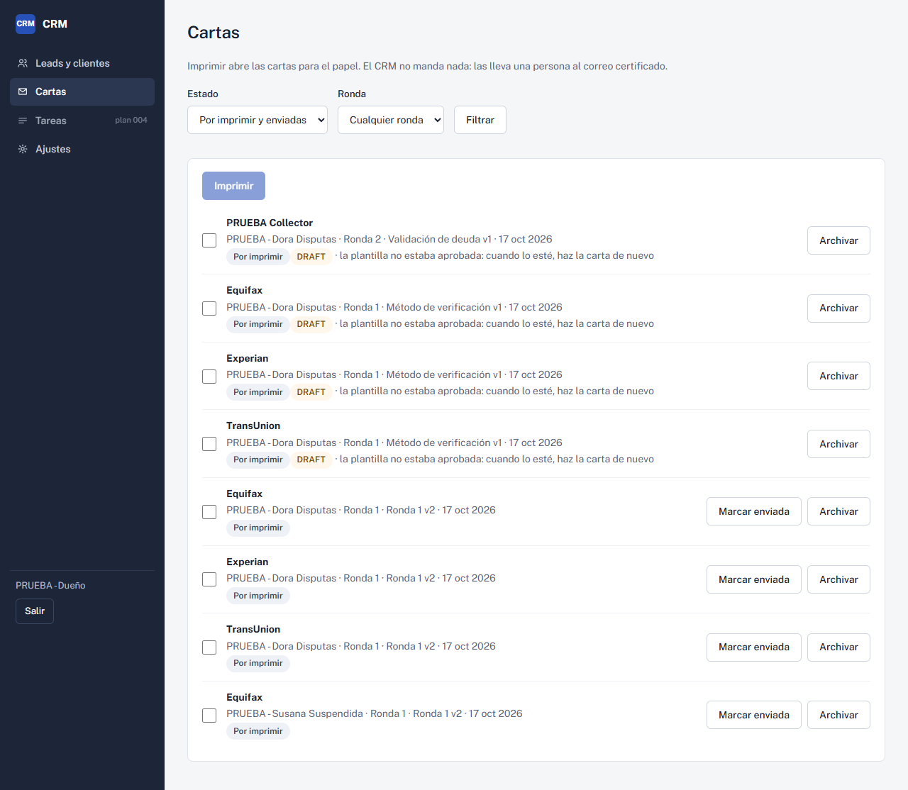
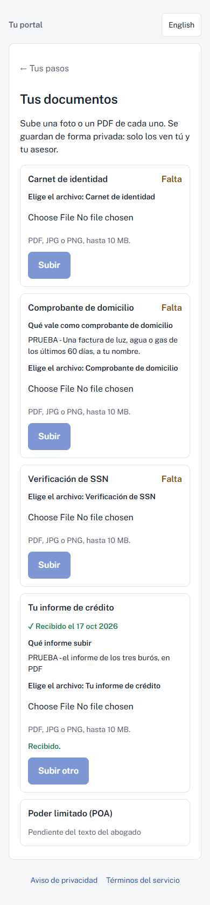

credit-repair CRM.
A booking page and a CRM of its own for a credit-repair business in New York.
My first CRM was built before I really knew what a CRM needs. So I studied the tools this industry uses and started over, with the law deciding the order of every step.
- Next.js
- React
- TypeScript
- Prisma
- SQLite (libSQL)
- Tailwind CSS
- Zod
- Resend
- Vitest
- Playwright

What I set out to do
One app for the public page and the CRM, personal credit in New York only. Notices before booking, a written contract, three business days to cancel, and no work until each step is done. The app enforces that order so nobody can skip it.
Decisions I made
- One app for the page and the CRM, on a host that can run its own server and database.
- No AI writes the dispute letters. Only templates the lawyer approves.
- Clients upload their report as a PDF. I never store anyone’s third-party passwords.
- Work starts after the cancel period, and payment comes when the package is done (both waiting on the lawyer’s yes).
- Letters go out on paper, by certified mail, in English, since they go to US companies.
- A saved letter is never edited by hand. If it changes, it’s archived and redone.
How it works
One Next.js app serves the public page, the client portal and the team CRM, on a host that can run its own server and database.
The work lock
The law sets the order, so the app does too. Work stays locked until every earlier step is done.
- Lead
- Notices signed
- Contract signed
- Cancel period passesthree business days
- Work unlocks
- Lettersfrom approved templates
- Certified mailprinted, on paper
Under the hood
What I used, and why.
The plan, and where it stands
- DoneMockups, the database, leads and the client file.
- DoneNotices, contract, client portal and the work lock.
- In progressCredit report, disputed items, letters and printing.
- PendingResults, billing, roles, tasks and reminders.
- PendingLegal texts: waiting on the lawyer. Nothing goes to real clients before that.
Plans & screens












The team CRM
The team side: leads and clients, a client file with its steps and lock, letters and settings. I made the approved mockup clickable with sample data; the real app needs its server, so its link goes here once it’s online.
Both screens are live: click, scroll and type inside them.
The client side
The client side: the public page, booking a call with the notices first, and the client portal. Sample data.
Both screens are live: click, scroll and type inside them.
What I can’t claim yet
No clients, no results and no promises yet: no “we remove items”, no score claims. The legal texts are still with the lawyer, and every screen here uses test data.